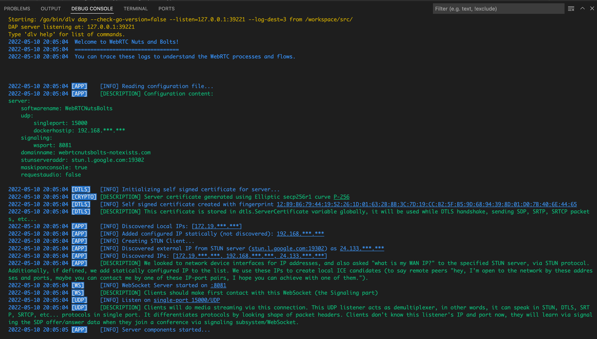

WebRTC Nuts and Bolts¶
WebRTC Nuts and Bolts¶


Welcome!
This documentation website is a customized version of original documentation of the WebRTC Nuts and Bolts repository. You can find the running Go implementation of the project codes in this repository.
A holistic way of understanding how WebRTC and its protocols run in practice, with code and detailed documentation. "The nuts and bolts" (practical side instead of theoretical facts, pure implementation details) of required protocols without using external dependencies or libraries.
When you run the project and follow the instructions, web page initializes the webcam, does handshake with the backend application (executes several WebRTC processes), at the end, the backend catches keyframe images and saves them as JPEG image files. You can see your caught keyframes at /backend/output/ folder as shoot1.jpg, shoot2.jpg etc... if multiple keyframes were caught.
You can track which steps taken during this journey by debugging or tracking the output at console.

 WHY THIS PROJECT?¶
WHY THIS PROJECT?¶
This project was initially started to learn Go language and was made for experimental and educational purposes only, not for production use.
After some progress on the development, I decided to pivot my experimental work to a walkthrough document. Because although there are lots of resources that exist already on the Internet, they cover small chunks of WebRTC concepts or protocols atomically. And they use the standard way of inductive method which teach in pieces then assemble them.
But my style of learning leans on the deductive method instead of others, so instead of learning atomic pieces and concepts first, going linearly from beginning to the end, and learning an atomic piece on the time when learning this piece is required.
 COVERAGE¶
COVERAGE¶
Web front-end side: Pure TypeScript implementation:
- Communicate with signaling backend WebSocket,
- Gathering webcam streaming track from browser and send this track to backend via UDP.
Server back-end side: Pure Go language implementation:
- A simple signaling back-end WebSocket to transfer SDP (Session Description Protocol) using Gorilla WebSocket library.
- Single port UDP listener, supports demultiplexing different data packet types (STUN, DTLS handshake, SRTP, SRTCP) coming from the same UDP connection.
- Protocol implementations of (only required parts):
- STUN (Session Traversal Utilities for NAT) for discovering external IP behind NAT by a STUN server and replying to the client's STUN binding request came by UDP connection.
- DTLS (Datagram Transport Layer Security) for secure handshake, authenticating each oter, and crypto key exchange process. DTLS is similar to TLS (Transport Layer Security), DTLS runs over UDP instead of TCP. This project supports only DTLS v1.2.
- RTP (Real-time Transport Protocol) for transferring media packets in fragments.
- SRTP (Secure Real-time Transport Protocol), a secure version of RTP.
- Only header parsing for VP8 video format to depacketizing fragmented packets to construct a video frame. libvpx-go was used for decoding VP8 keyframe as image.
- github.com/fatih/color was used while printing colored output on console while logging.
- Implementation of TLS_ECDHE_ECDSA_WITH_AES_128_GCM_SHA256 cipher suite support using Go Cryptography library.
 INSTALLATION and RUNNING¶
INSTALLATION and RUNNING¶
Installation and building instructions are described at GitHub README.
 ASSUMPTIONS¶
ASSUMPTIONS¶
Full-compliant WebRTC libraries should support a wide range of protocol details defined in RFC documents, client/server implementation differences, fallbacks for different protocol versions, a wide variety of cipher suites and media encoders/decoders. Also should be implemented as state machines, because WebRTC contains has some parts which managed as state machines, eg: ICE (Interactive Connectivity Establishment), DTLS (Datagram Transport Layer Security) handshake, etc...
In WebRTC Nuts and Bolts scenario, some assumptions have been made to focus only on required set of details.
| Full-compliant WebRTC libraries | WebRTC Nuts and Bolts |
|---|---|
| WebRTC has no client or server concepts in its peer-to-peer nature, there are controlling or controlled peers. | This project aims to act as listener server and it only receives media, not sends. To make the code more simplistic and cleaner; the concepts "client" instead of "local peer" and "server" instead of "remote peer" has been used. |
| Should support both controlling and controlled roles. | Go language side will act only as server (ICE controlling), SDP offer will come from this side, then SDP answer will be expected from the client. |
| For separation of concerns and to maintain architectural extensibility, all WebRTC libraries were implemented as separate packages/repos (STUN package, DTLS package, SRTP package, etc...) | To keep it simple, this project was designed as monorepo but separated into packages. This choice depends on architectural needs and technical maintenance needs. |
| Should support DTLS fragmentation. | DTLS fragmentation is not supported. |
| Should support multiple cipher suites for compatibility with different types of peers. More cipher suites can be found at here. | Only TLS_ECDHE_ECDSA_WITH_AES_128_GCM_SHA256 is supported. |
| Should implement packet reply detection, handling corrupted packets, handling unordered packet sequences and packet losses, byte array length checks, lots of security protections against cyberattacks, etc... | This project was developed to run in only ideal conditions. Incoming malicious packets were not considered. |
 CONTRIBUTING and SUPPORTING the PROJECT¶
CONTRIBUTING and SUPPORTING the PROJECT¶
You are welcome to create issues to report any bugs or problems you encounter. At present, I'm not sure whether this project should be expanded to cover more concepts or not. Only time will tell  .
.
If you liked and found my project helpful and valuable, I would greatly appreciate it if you could give the repo a star on GitHub. Your support and feedback not only help the project improve and grow but also contribute to reaching a wider audience within the community. Additionally, it motivates me to create even more innovative projects in the future.
 RESOURCES¶
RESOURCES¶
I want to thank to contributors of the awesome sources which were referred during development of this project and writing this documentation. You can find these sources below, also in between the lines in code and documentation.
- Wikipedia
- WebRTC For The Curious: Awesome resource on theoretical concepts of WebRTC. It is vendor agnostic. Created by creators of Pion project
- Pion project
- Pion DTLS: A library for DTLS protocol, developed in Go. Some parts about cryptography used with from this project, with modifications.
- Pion SRTP: A library for SRTP protocol, developed in Go. Some parts about cryptography used with from this project, with modifications.
- Jitsi
- Jitsi ice4j: A library for ICE processes including gathering ICE candidates, developed in Java and Kotlin. You can start to explore from here and here
- Jitsi Media Transform: A library for ICE processes including gathering ICE candidates, developed in Java and Kotlin. You can find different protocol implementations here
- Jitsi Videobridge: A server application that orchestrates these processes and serves API interfaces, developed in Java and Kotlin
- The Bouncy Castle Crypto Package For Java: A library for TLS processes and cryptography, developed in Java.
- Tinydtls: A library for DTLS processes, developed in C.
- Mozilla Web Docs: WebRTC API: A documentation on WebRTC API at browser side.
- Several RFC Documents: In code and documentation of this project, you can find several RFC document links cited.
 LICENSE¶
LICENSE¶
WebRTC Nuts and Bolts is licensed under the Apache License, Version 2.0. See LICENSE for the full license text.